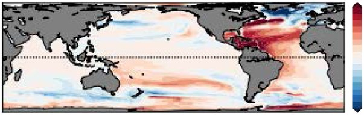
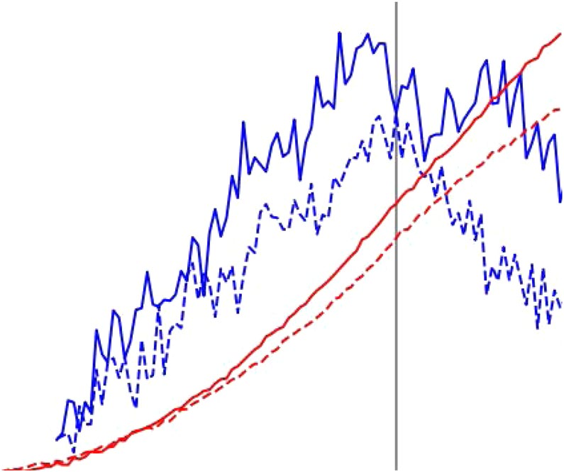
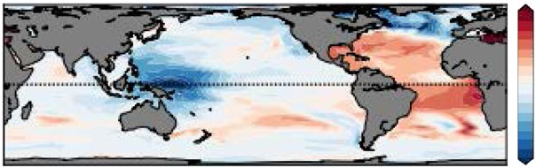
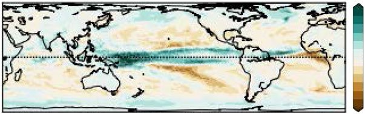

TCR Shift: ~0.4 K
Without salinity-pattern adjustment, transient warming is substantially larger.
Forcing and Feedback • Ocean Heat Uptake
Nature Climate Change (2021)
Transient CO2-doubling experiments show that subtropical surface salinification from an amplified hydrological cycle strengthens ocean heat uptake and reduces near-term surface warming.

TCR Shift: ~0.4 K
Without salinity-pattern adjustment, transient warming is substantially larger.
Subtropical Salinification
Dry-get-drier freshwater forcing increases salinity and weakens upper-ocean stratification.
Deeper Heat Sequestration
Salinity-driven buoyancy changes enhance penetration of heat into the ocean interior.
Paper Citation
Liu, M., G. Vecchi, B. Soden, W. Yang, and B. Zhang, 2021: Enhanced hydrological cycle increases ocean heat uptake and moderates transient climate change. Nature Climate Change, 11, 848-853. https://doi.org/10.1038/s41558-021-01152-0
Quantify how hydrological-cycle amplification feeds back on ocean heat uptake and transient surface temperature response through sea-surface salinity changes.
From Liu et al. (2021), Nature Climate Change, https://doi.org/10.1038/s41558-021-01152-0.
Figure 1

Figure 2a
Figure 2b

Figure 2c
